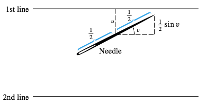
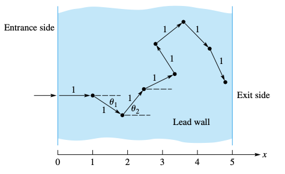

Random numbers in simulations#
REFS:
Boudreau, Applied Computational Physics
Heath, Scientific Computing
Landau y Paez, Computational physics, problem solving with computers
Anagnostoupulos, A practical introduction to computational physics and scientific computing
Ward, Numerical Mathematicas and Computing
Beu, Introduction to Numerical Programming - A practical guide for scientist and engineers using python and C/C++
The so-called MonteCarlo methods are computational methods that use random numbers to perform computations or simulations. Applications are immense, from traffic simulations, to atomic systems, to pedestrian crowds, to probabilistic computations, to neutron scattering in nuclear shielding, to materials design, and so on.
Loaded dice (Ward)#
Imagine that you have a loaded dice, where each face has different probability to appear (for a fair dice, it should be equal prob). For the present example, let’s assume the following
Outcome |
1 |
2 |
3 |
4 |
5 |
6 |
|---|---|---|---|---|---|---|
Probability |
0.2 |
0.14 |
0.22 |
0.16 |
0.17 |
0.11 |
Think of a way to simulate the loaded dice (hint: using a uniform random number in \([0, 1)\), you can split the unit interval in terms of the previous probabilities to choose each face at each throw). Launch the simulated die 10000 times and print the prob per face.
#include <iostream>
#include <fstream>
#include <random>
#include <string>
#include <vector>
void check_args(int argc, char **argv);
void generate_samples_loaded_dice(const int seed, const int nsamples, const std::string & fname);
int main(int argc, char **argv)
{
check_args(argc, argv);
const int SEED = std::stoi(argv[1]);
const int SAMPLES = std::stoi(argv[2]);
const std::string FNAME = argv[3];
// MAYBE LOADED PROBS CAN ALSO BE READ
generate_samples_loaded_dice(SEED, SAMPLES, FNAME);
return 0;
}
void check_args(int argc, char **argv)
{
if (4 != argc) {
std::cerr << "Error. Usage: \n" << argv[0] << " SEED SAMPLES FNAME\n";
exit(1);
}
}
void generate_samples_loaded_dice(const int seed, int const nsamples, const std::string & fname)
{
// TODO
}
[ ] Read the loaded probs from the command line.
[ ] Read the loaded probs from a file. Maybe a configuration file using something like toml, yaml or json.
Buffon needle problem#
“In probability theory, Buffon’s needle problem is a question first posed in the 18th century by Georges-Louis Leclerc, Comte de Buffon:[1]
Suppose we have a floor made of parallel strips of wood, each the same width, and we drop a needle onto the floor. What is the probability that the needle will lie across a line between two strips?"
From: https://en.wikipedia.org/wiki/Buffon’s_needle_problem?useskin=vector
For this problem, we will use a needle shorter than the lines’ separation. We will put the needle center as a random variable, and its orientation will be another random variable.
{kind=link}
From: Ward
The theoretical solution predicts that
where \(l\) is the needle lenght and \(t\) the lines separation.
Let’s use \(l= t= 1\). Simulate nsamples (at least 50000) throws, and check the numerical probability compared with the expected one. From symmetry, let’s choose \(u \in [0, 1/2)\), and \(v \in [0, \pi/2)\). The needle intersects one of the lines if and only if \(u \le \frac{1}{2} \sin v\). The probability will be the number of times the condition is fulfilled, over the
#include <iostream>
#include <fstream>
#include <random>
#include <string>
#include <vector>
#include <cmath>
void check_args(int argc, char **argv);
void generate_samples_needle(const int seed, const int nsamples);
int main(int argc, char **argv)
{
check_args(argc, argv);
const int SEED = std::stoi(argv[1]);
const int SAMPLES = std::stoi(argv[2]);
generate_samples_needle(SEED, SAMPLES);
return 0;
}
void check_args(int argc, char **argv)
{
if (3 != argc) {
std::cerr << "Error. Usage: \n" << argv[0] << " SEED SAMPLES\n";
exit(1);
}
}
void generate_samples_needle(const int seed, int const nsamples)
{
// TODO
}
[ ] Plot the percentual diff between the expected and computed value as a function of the number of samples.
[ ] How many samples will be needed to get a \(10^{-8}\) relative precision?
Neutron shielding#
Imagine a flux of neutrons penetrating a lead wall of a given thick. Your task is to estimate the fraction of neutrons that crossed the wall.
{kind=link}
Neutrons enter the wall perpendicularly, but then they rebound in random directions, advancing a unit distance after each collision. Each collision dissipates kinetic energy, and we will assume that it is zero after 8 collisions. Compute the fraction of neutrons that cross the wall.
[ ] Compute the fraction as a function of the distance.
[ ] Compute the fraction as a function of the number of collisions to loose all kinetic energy, with fixed distance.
Integrals using Monte Carlo (again)#
Monte Carlo methods are well suited to compute multi-dimensional integrals, like
where its numerical form can be written as
The total number of points needed for this is about \(N = n^D\). And the error, for a typical quadrature, goes like \(\epsilon_{\text{math}} = (1/n)^p = N^{-p/D}\). This is impractical. For \(D = 4\), this makes the Simpson method a first order approximation.
In Monte Carlo integration, we choose points uniformly in the given region and then compute the integral. The result quality depends on the actual points chosen and its representativity on the function to be integrated. The numerical integral can be written as
where
is the standard deviation (\(\sigma^2\) is called the variance). The error decreases as \(n^{-1/2}\) regardless the dimension, which is very advantageous for \(D \ge 4\).
Importance sampling#
For \(n=20\) and \(D = 20\), computing the equipartition function
requires \(10^{60}\) operations, which, in a petascale supercomputer (more than \(10^{16}\) flops), will take around \(10^{36}\) years. Also, the actual choice of points is important. For instance, to compute points inside an hypersphere in \(D\) dimensions, we sample points uniformly in the hyper cube, and the probability is
which, for \(D = 100\), is about \(10^{-68}\), so basically all points are rejected.
Therefore, it is advisable to have a procedure that allows to select points inside the region where the function is more representative. To do so, we rewritte the integral as
where \(w(\vec x)\) is a weight function to choose the points, and must be normalized. After that,\(n\) random points are generated according to the weight function, and the integral is simply given as
with error
There is some freedom to chose the weight function. The idea is to focus the variation in the weight function, so to make the \(h\) function as constant as possible.
Example (Boudreau): Let’s compute the following
Using three weight functions as follows:
\(w(x)\) |
\(h(x)\) |
|---|---|
\(e^{-x}\) |
\(x^2\) |
\(xe^{-x}\) |
\(x\) |
\(x^2e^{-x}\) |
1 |
Implement a program that prints the result, and the error, comparing with the actual value of 2.
#include <iostream>
#include <fstream>
#include <random>
#include <string>
#include <vector>
#include <cmath>
void check_args(int argc, char **argv);
void importance_sampling0(const int seed, const int nsamples);
void importance_sampling1(const int seed, const int nsamples);
void importance_sampling2(const int seed, const int nsamples);
int main(int argc, char **argv)
{
check_args(argc, argv);
const int SEED = std::stoi(argv[1]);
const int SAMPLES = std::stoi(argv[2]);
importance_sampling0(SEED, SAMPLES);
importance_sampling1(SEED, SAMPLES);
importance_sampling2(SEED, SAMPLES);
return 0;
}
void check_args(int argc, char **argv)
{
if (3 != argc) {
std::cerr << "Error. Usage: \n" << argv[0] << " SEED SAMPLES\n";
exit(1);
}
}
void importance_sampling0(const int seed, int const nsamples)
{
// TODO
// define aux random number generators
std::mt19937 gen(seed); // random bit generator
std::exponential_distribution<double> w(1.0); // first weight function to test
auto h = [](double x){ return x*x; }; // its integrand
double sum = 0.0, sum_2 = 0.0;
for (int ii = 0; ii < nsamples; ++ii) {
double x = w(gen); // generate a random number
double val = h(x); // evaluate the integrand
sum += val; // accumulate the sum
sum_2 += val*val; // accumulate the sum
}
double mean = sum / nsamples; // compute the mean
double var = sum_2 / nsamples - mean * mean; // compute the variance
double sigma = std::sqrt(var/(nsamples-1)); // compute the standard deviation
double rel_err = std::fabs(1.0 - mean/2.0);
std::printf("%20.16e +- %20.16e\t%20.16e\n", mean, sigma, rel_err);
}
void importance_sampling1(const int seed, int const nsamples)
{
// TODO
// define aux random number generators
std::mt19937 gen(seed); // random bit generator
}
void importance_sampling2(const int seed, int const nsamples)
{
// TODO
// define aux random number generators
std::mt19937 gen(seed); // random bit generator
}
The random walk#
The random walk, is an example of random process. It has been used in several applications: https://en.wikipedia.org/wiki/Random_walk?useskin=vector#Applications

We will define a grid, and our walker will choose the next position at random. We are interested in computing the mean squared distance as function of time, which is related with a diffusion process. Since we are using four next neighbors, we need to choose those directions with equal probability, with a “fair” dice.
Write a program to simulate the random walk in 2D. Use a grid of variable sixe (read it from the command line), and perform NSTEPS. Print the mean square distance as a function of the iteration. What do you find?
[ ] Create a random walk in 3 and 4 dimensions. Also plot the distance as a function of time.
[ ] Self avoiding random walk: Perform a 2D random walk BUT avoid moving to a site that was already visited. Is the diffusion constant the same? what do you expect? See https://en.wikipedia.org/wiki/Self-avoiding_walk
[ ] Create a slight load to the positive x direction. What happens with the random walk?
[ ] Create an ensemble of random walkers. Compute the system total entropy as \begin{equation} S = -\sum p_i\ln p_i, \end{equation} where \(p_i = n_i/N\) is the total number \(n_i\) of walkers in cell \(i\), and \(N\) is the total number of walkers. Plot it as a function of time, starting from all the walkers in the center. What do you see?